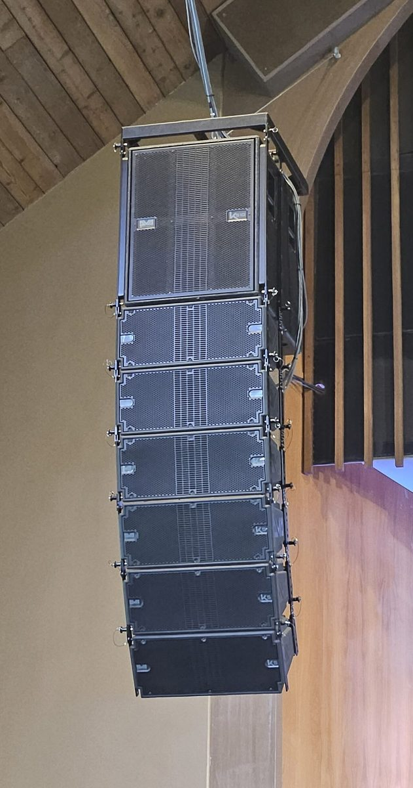
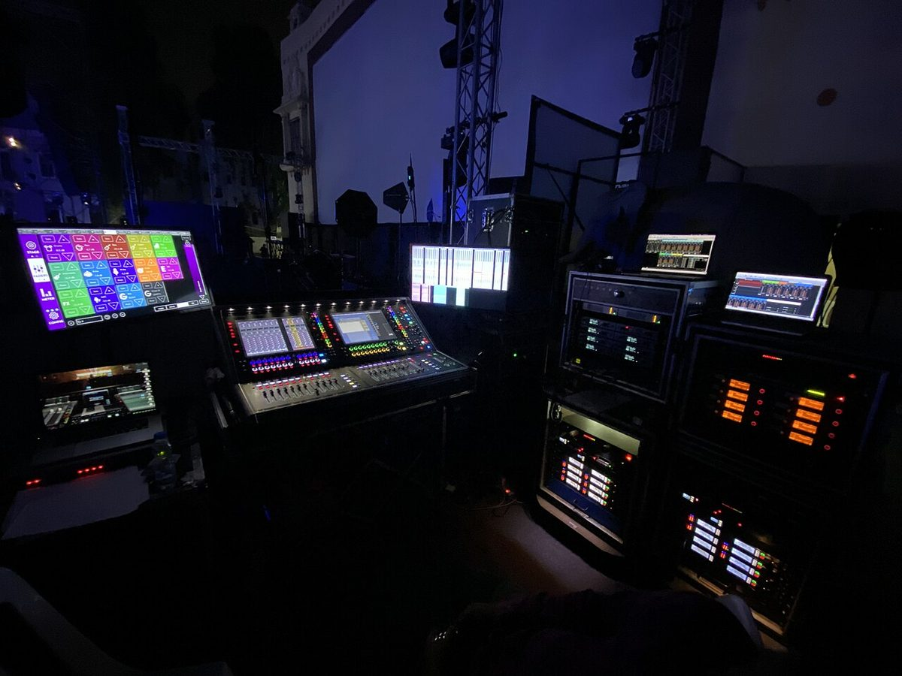
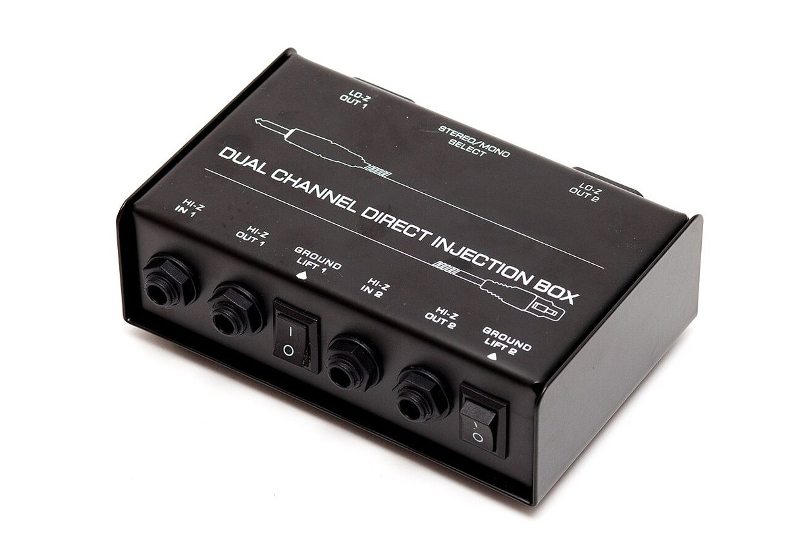

Live Sound Reinforcement: Feedback, the PA & Show Day
Sound reinforcement means making a real performance louder and clearer for a crowd, while the performance is still happening. Recording can fix things later. Live sound can't: the mic, the speakers and the audience share one room, and the loudspeaker's sound comes right back into the microphone. Every topic in this lesson comes back to that loop: how loud the PA must be, how loud it can be before it howls, and how to run a show so nothing goes wrong in front of an audience.
1. The decibel: the PA's currency
Ears hear loudness on a ratio scale, not a straight-line one. Going from one singer to two doesn't sound twice as loud, and neither does doubling the amplifier. The decibel (dB) is a logarithm of a ratio, so it matches how we hear. You only need four facts to run a PA:
dB = 10·log₁₀(P₂ / P₁) for power dB = 20·log₁₀(p₂ / p₁) for pressure or voltage
There are many "dB"s. dB SPL is sound pressure in the air (0 dB SPL is the faintest sound a young ear can hear, 20 µPa). dBu and dBV are voltages in cables, and dBFS is level inside a digital desk. A meter reading only makes sense if you know which one it is.
Lab: add the sources
2. The inverse square law: the back row problem
Sound from a small speaker spreads out like a growing balloon. At twice the distance, the same energy covers four times the area, so the level drops by 6 dB for every doubling of distance. That is the inverse square law, and it is why the front row is always louder than the back. A tall line array spreads more like a cylinder in its near field, losing closer to 3 dB per doubling, which is why big venues hang them.
SPL at a seat = sensitivity (dB, 1 W at 1 m) + 10·log₁₀(watts) − 20·log₁₀(distance in m)
A speaker's sensitivity is the SPL it makes from 1 watt, measured 1 metre away. Turn the watts up 10× and you gain only 10 dB. Move the listener from 1 m to 32 m (five doublings) and you lose 30 dB. Distance always wins, so the cheapest way to cover the back is to raise the speaker and aim it there.
Lab: cover the audience
Target: speech needs about 85 dB SPL at the back row and a music show 95–100 dB, with every seat within about 6 dB of every other. Real rooms add reflected sound on top, so the back row is a little louder than this free-air model says (see Room Acoustics).
3. Feedback and gain before feedback
Feedback is a loop: the mic hears the speaker, the console sends that back to the speaker louder, the mic hears it again, and so on. If the sound comes back around the loop at least as loud as it left (a loop gain of 0 dB or more) at any one frequency, that frequency grows every trip until it howls. It's always one frequency first, the one where the speaker, the room and the mic all happen to peak together.
So how loud can the PA get? Acoustician Don Davis gave the answer as two numbers. NAG (needed acoustic gain) is how much the PA must lift the talker so the farthest listener hears them as if they were close. PAG (potential acoustic gain) is how much the room geometry allows before feedback. If PAG ≥ NAG, the show works.
PAG = 20log D1 − 20log D2 + 20log D0 − 20log Ds − 10log NOM − 6 dB
NAG = 20log D0 − 20log EAD
Lab: will this show work?
The rules hiding in the equation: halve the mouth-to-mic distance and you gain 6 dB (the biggest, cheapest fix). Double the open mics and you lose 3 dB, so mute every mic that isn't in use. Keep the speakers in front of the mics (D1 big), and put each wedge in its mic's null: behind a cardioid (180°), about 126° off a supercardioid. EQ can't beat geometry; it only trims the peaks after the geometry is right.
4. Ringing out the system
Before anyone arrives, engineers ring out the PA: put the mics where they'll be used, slowly raise the gain until the system just starts to ring, find that frequency, cut it a little with a narrow EQ band, and repeat. Each cut buys a few dB at that frequency only, until the next peak rings. After four to six cuts the gains get small and the PA starts to sound hollow, so stop. Ring out each monitor mix the same way, on its own.
31-band graphic EQ: press a band to cut it 3 dB (press again to cut deeper, up to 12 dB).
In the real room: keep the level reasonable and your hand on the master. Ring out with the mics in their show positions and the wedges where they'll sit. Use the narrowest cut that works (a parametric with high Q beats a graphic), and write the frequencies down: rooms repeat themselves, and the same frequency will try to ring again during the show. The EQ lesson covers the sweep-and-cut method.
5. Loudspeakers: drivers, crossovers and beaming
A loudspeaker driver is a microphone run backwards. Current from the amplifier flows through a coil of wire sitting in a magnet's gap; the coil is pushed in and out, and it drags the cone with it. A moving coil in a magnet also generates a voltage (the back EMF) that fights the amplifier, which is why a speaker's impedance changes with frequency.
Woofer and subwoofer
Big, heavy cones (10–21 inch) that move a lot of air for low notes. Subs handle roughly 30–100 Hz and sit on the floor, where the boundary adds bass for free.
Compression driver + horn
A small, stiff diaphragm feeding a horn throat. Very efficient for mids and highs, and the horn's shape sets the coverage angle (for example 90° wide × 50° tall).
Crossover
A filter that sends lows to the woofer and highs to the horn. A high note can't move a heavy cone fast enough, and a low note would rip a tweeter apart, so each driver gets only its own job.
Passive vs active
A passive box hides its crossover inside and needs an external amp. An active (powered) box has the amp, crossover, EQ and limiter built in and needs only a line-level signal plus mains power. Most school PAs are active.
Why one driver can't do it all: beaming
A driver sends sound evenly in all directions only while the wavelength is bigger than the cone. Once the wavelength is shorter than the cone's diameter, the sound squeezes into a narrow beam straight ahead, and listeners off to the side lose the highs. That is high-frequency beaming, and it's why every crossover hands the highs to a smaller driver.
Reading a spec sheet
6. Amplifiers, impedance and speaker cable
A power amplifier is a voltage source: it pushes a voltage, and the speaker's impedance (its resistance to AC, in ohms Ω) decides how much current flows. Lower impedance, more current, more power, and more heat in the amp. Hang two 8 Ω boxes on one channel in parallel and the amp sees 4 Ω; four of them is 2 Ω, which most amps can't survive.
Parallel: Z = Z₁ / n Series: Z = n · Z₁ Power: P = V² / Z
Headroom, not just watts
Give a speaker an amp rated about 1.5–2× its continuous power, and use it with headroom. An amp driven into clipping squares off the wave and pours high-frequency energy into the horn, so a small amp that clips kills more tweeters than a big one that doesn't.
Bridge mode
The two channels push the same signal in opposite polarity on either side of one speaker: twice the voltage, four times the power into the same load. But each side now sees half the load, so bridge only into 8 Ω on a 4 Ω-rated amp.
Damping factor
Load impedance ÷ the amp's output impedance. A high number lets the amp grip the cone and stop it after a kick drum. Long, thin speaker cable adds resistance in series and throws most of it away.
Amplifier classes
Class AB amps are heavy and run warm. Class D amps switch their transistors fully on and off: about 90% efficient, light enough for a powered speaker. Their protection circuits (clip limiters, thermal, DC and short protection) are why a modern amp mutes instead of dying.
Never use an instrument (guitar) cable for a speaker. It's thin, shielded wire made for millivolts; at speaker currents it heats up and starves the speaker. Speaker cable is two thick conductors, usually on Speakon connectors, which lock and can't be touched while live.
7. Where the speakers go, and delay speakers
Mains in front of the mics
Front-of-house (FOH) speakers go downstage of every microphone, so the mics are behind the speakers' coverage. This makes D1 big and the PAG high.
Up and aimed
Raise the mains above the audience's heads (on stands or flown) and aim the top of the box at the back third of the room. Heads absorb sound, and height evens out the front-to-back spread (section 2).
Monitors in the nulls
Wedges sit where each mic is deaf: behind a cardioid, at the 126° sides of a supercardioid. In-ear monitors remove the wedge from the loop entirely.
Fills and delays
Front fills cover the first rows under the mains; under-balcony and back-of-hall speakers cover where the mains can't reach. Those must be delayed.
Lab: time-align a delay speaker
Sound travels about 343 m/s, so it takes roughly 3 ms per metre. Electricity is instant. A delay speaker halfway down the hall plays before the mains' sound gets there, and your ears follow the first arrival, so the voice seems to come from the ceiling. Delay it by the travel time from the mains, then add about 10 ms more. Thanks to the precedence (Haas) effect, the ear locks onto the mains (which now arrive first) while the delay speaker quietly adds level. Go too late (much over 30 ms) and it becomes an echo.


8. Hum, ground loops and safety
A steady 60 Hz hum (50 Hz in Europe) with buzzy harmonics is almost always a ground loop. Two pieces of gear plugged into different outlets each connect to safety ground, and the audio cable's shield connects them to each other. That makes a loop of wire. Tiny differences in ground voltage between the outlets push current around it, and that current flows through the shield, right where your audio lives.
Balanced lines
Two copies of the signal in opposite polarity plus a shield. Noise lands on both wires equally and cancels at the input. Use XLR or TRS balanced cables for every long run.
Ground lift on a DI
A DI box's ground lift switch breaks the shield (audio ground) between stage and console, breaking the loop without touching safety.
One power source
Power the console, processors and amps from the same circuit (or a properly installed distro), so their grounds sit at the same voltage.
Never lift safety ground
Never break the earth pin, never use a "cheater" adapter. That ground is what trips the breaker if a fault makes a chassis live. Audio problems never justify removing it.

Lab: hum hunt
Lab: how long is safe?
Your ears are the one piece of gear you can't replace. NIOSH sets 85 dBA for 8 hours as the limit, and every +3 dB halves the safe time. A loud rock show at FOH can run 100 dBA or more. Wear earplugs when the show is loud, and mix at a level the audience needs, not the loudest the PA can do.
- Power: use GFCI protection outdoors and near water, don't overload one circuit (count the amps' current draw), and keep the cable run inspected and taped or covered where people walk.
- Rigging and stands: stands on level ground with legs fully spread, safety chains on anything flown, and nothing hung over the audience without a qualified rigger.
- Phantom power and mutes: mute the channel before plugging or switching +48 V, and turn the amps down before patching anything, to save the speakers from a loud pop.
9. Show day: from load-in to debrief
Professionals say the show is won before doors open. Here is the order a live crew works in. Put it in order first, then read why each step sits where it does.
Before: preparation and the briefing
Visit the venue, draw the stage plot and input list, pack spares (cables, batteries, fuses, gaff tape). At the technical briefing everyone learns the running order, cues, who wears which mic, and who to tell when something fails.
Hookup and power-up
Place the gear, run the snake and power, then connect. Power up from the source end: console and processors first, amplifiers and powered speakers last, with their levels down. Power down in reverse: amps first. That way no switch-on thump ever reaches a live speaker.
Line check
Check every input before anyone performs: scratch or talk into each mic, confirm it arrives on the right channel, the right monitor and with the right polarity. Fix it now, when it's quiet.
Ring out, then sound check
Ring out FOH and each monitor mix (section 4). Then the sound check: each performer alone (set gain, EQ, dynamics), then monitors, then everyone together to build the mix. Save a scene.
The show
Stay alert: watch the stage, follow the script, and have the next cue's mic up just before it's needed. Mute mics as soon as they're done (every open mic costs gain before feedback). Refine the mix as the room fills: bodies absorb sound, so it gets drier and quieter. Take notes on what went wrong.
After: teardown and debrief
Amps down and off first, then the rest. Coil cables over-under so they don't kink, count and secure the gear, and lock up wireless packs. At the debrief, go through your notes while they're fresh, so next show starts better.